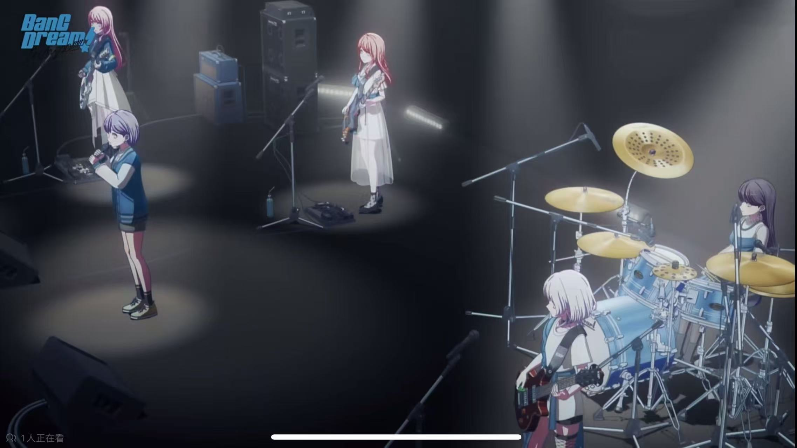
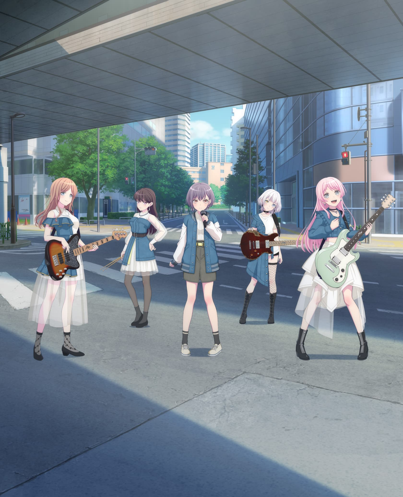
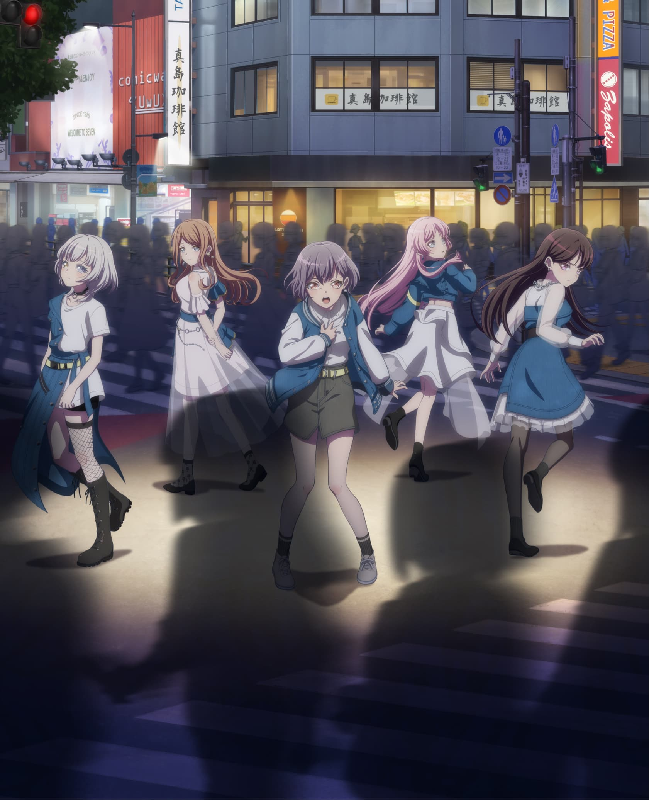
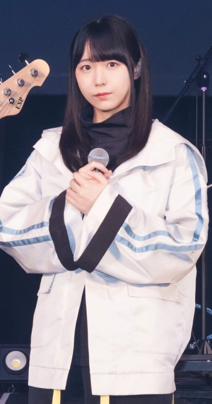
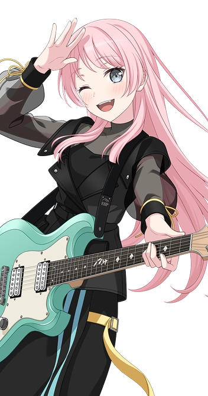
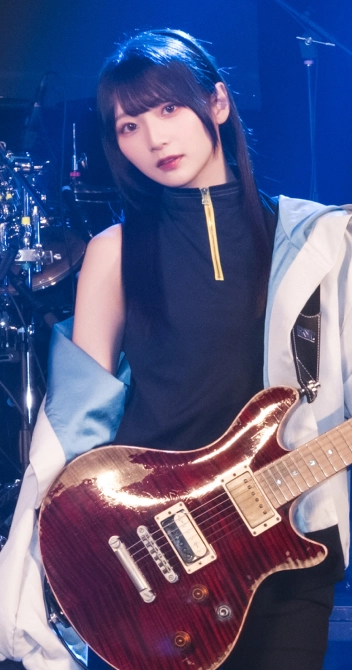
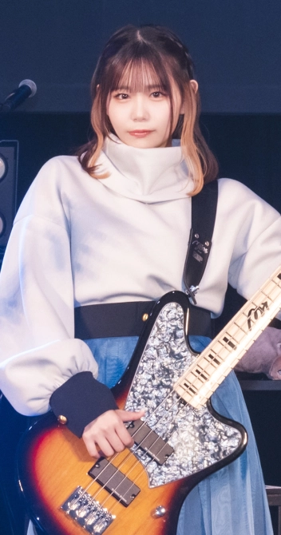
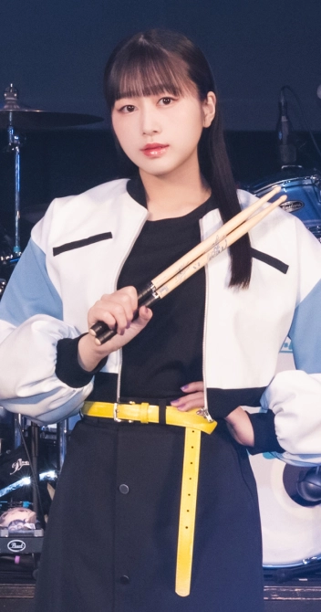

《詩超絆》
“一生だよ。”真正沉重的承诺，不是保证永远不会分开，而是在已经伤害彼此以后，仍然愿意认真地说：这段关系对我不是暂时的。

非官方粉丝介绍页

动画官方站高清主视觉。
MyGO!!!!!
MyGO!!!!! 是 BanG Dream! 企划中的五人乐队。名称让人联想到日语“迷子”，五个感叹号对应五位成员。她们把难以整理的人际关系、羞耻、执念与渴望，写进直接而有力度的乐曲中。
Listen to MyGO!!!!!
从《迷星叫》的漂泊感，到《詩超絆》近乎撕裂的告白，MyGO!!!!! 的歌曲总在寻找一种能够与别人继续走下去的语言。
音频保存在本项目内，打开网页后无需连接境外音乐服务。
Bilibili video
播放器无法加载时，可 直接前往哔哩哔哩观看
Discography
封面与发行信息来自 BanG Dream! 官方唱片页面。点击封面可以查看官方收录曲目与版本信息。
Words that remain
这里不是完整歌词转载，而是短句与听后意译。它们谈论的并不只有乐队，也是在关系里迷路过的每一个人。
五人的声音

角色图片由用户提供
Vo.
高松 燈
Tomori Takamatsu
羽丘女子学园高中一年级。感受事物的方式与周围人有些不同，不善于表达，却会用近乎呐喊的歌声把内心交出去。
查看官方角色页2023 TV 动画 · 全 13 话
转学生千早爱音为了融入班级而寻找乐队成员，并向“羽丘的怪女孩”高松燈发出邀请。她很快发现，燈、爽世与立希曾经的乐队 CRYCHIC 留下了无法绕开的裂痕。
《BanG Dream! It's MyGO!!!!!》把组乐队拍成一段充满误解、沉默与失控的青春关系剧。音乐不是终点，而是她们终于愿意继续说下去的方法。
访问动画官方主页Unforgettable moments
争吵、沉默、疲惫和失控都没有消失。真正发生改变的是，她们开始允许彼此以不完美的样子留在身边。
角色与演奏者

高松燈 · Vo.
为高松燈配音，并在现实乐队中担任主唱。她让燈细小、迟疑的说话方式，与舞台上爆发性的歌声形成鲜明反差。

千早爱音 · Gt.
为千早爱音配音，并在现实乐队中担任吉他手。她把爱音的行动力、要面子与不愿放弃都带进表演。

要乐奈 · Gt.
为要乐奈配音，并在现实乐队中担任吉他手。乐奈自由又难以捉摸，吉他则是她最直接的语言。

长崎爽世 · Ba.
为长崎爽世配音，并在现实乐队中担任贝斯手。温柔、执着与失控之间的细微变化，是爽世最重要的表演层次。

椎名立希 · Dr.
为椎名立希配音，并在现实乐队中担任鼓手。立希的急躁与保护欲，在她紧绷而有推动力的演奏中得到延伸。
继续探索
本页使用的新增角色图、声优照片与动画剧照来自 BanG Dream! 官方网站和动画官方站。用户提供的七张图片仅用于本地粉丝介绍页。Pixiv 同人作品没有被擅自转载或去除水印，下面提供标签入口，观看时请遵守画师的转载说明。